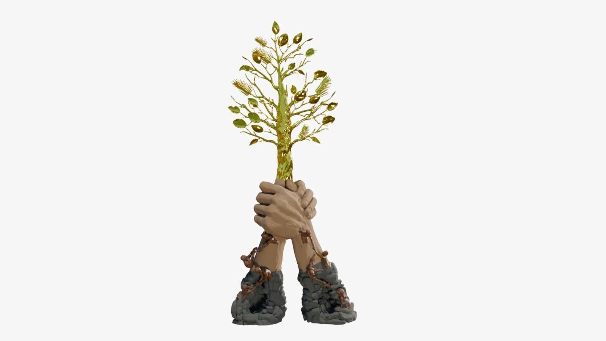
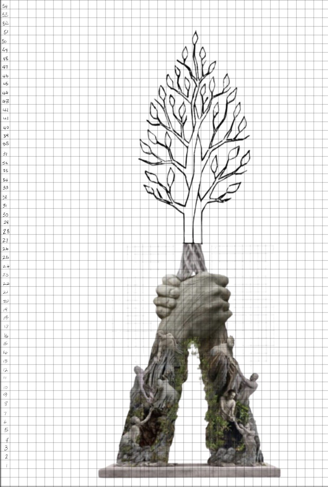
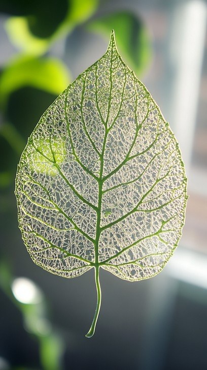
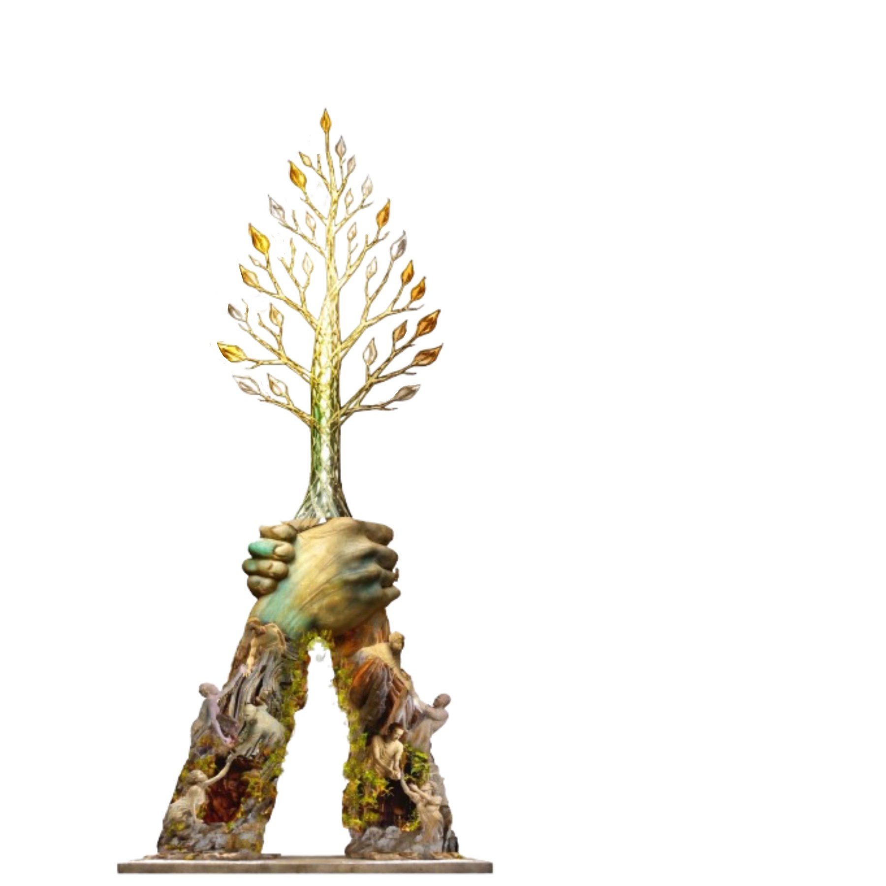
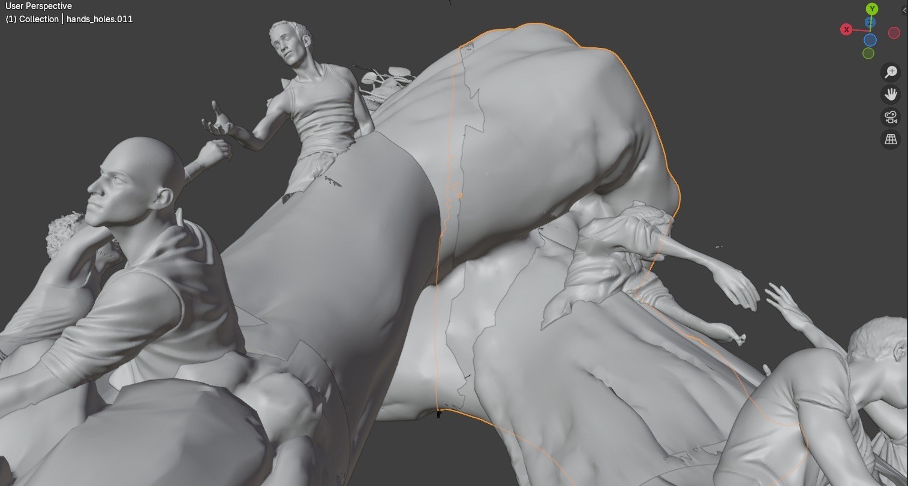
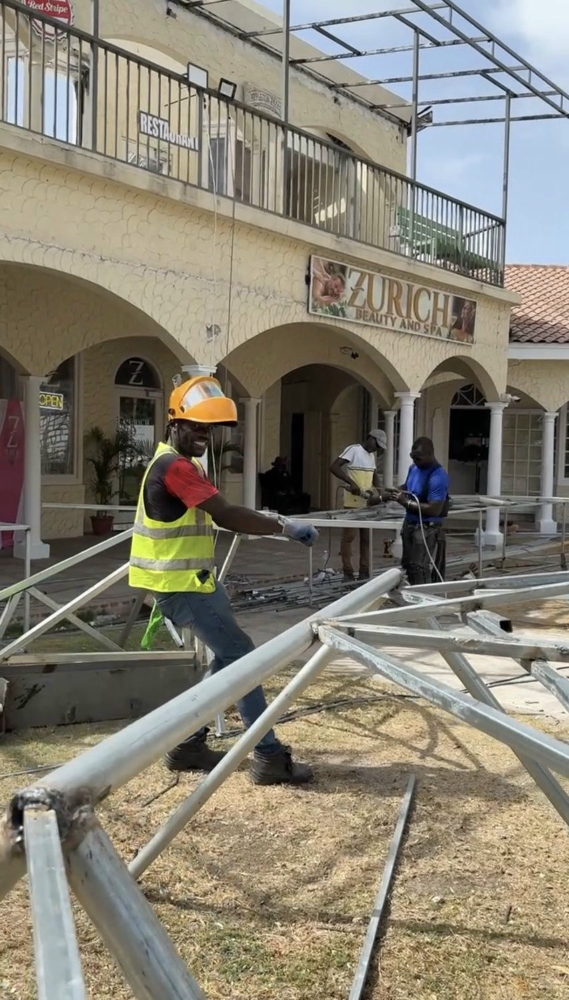
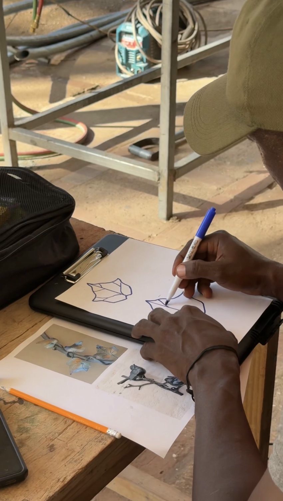
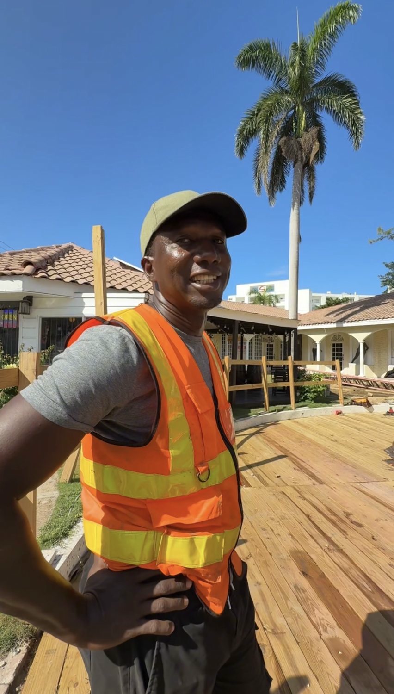
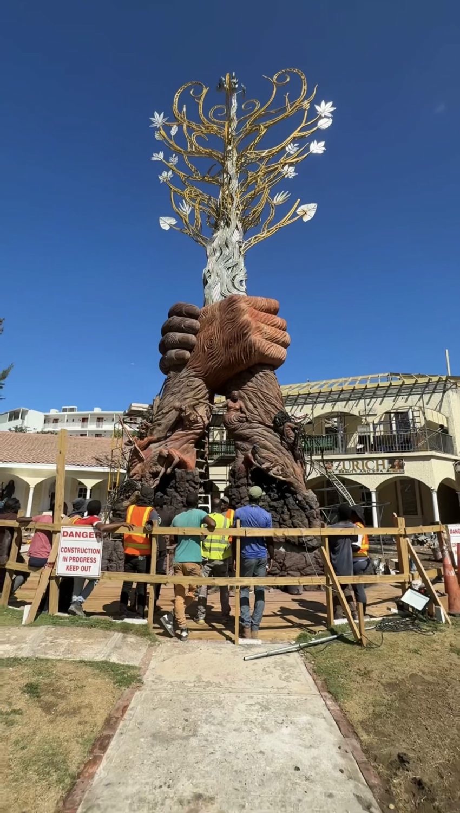
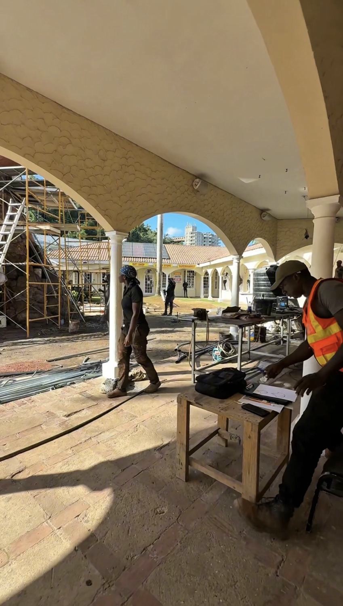

Public Art · Monumental Sculpture · Montego Bay, Jamaica
Together
We Rise.
A 62-foot monument by Scheed Cole at St James Place, Montego Bay. Commissioned by Christopher Issa and S Hotels, it honours Jamaica’s resilience and the people who helped the country recover after Hurricane Melissa.

The project
A nation rising
together.
Unveiled on 28 October 2026 on Jimmy Cliff Boulevard, Together We Rise gives physical form to the idea of a helping hand. Two monumental hands support a rising tree while figures below rescue, climb and rebuild together.
The commission followed the public response to Cole’s Doctor Bird at S Hotel. An initial idea centred on Jamaican music evolved after Hurricane Melissa into a tribute to survival, mutual support and renewal.
The official Together We Rise song
Press play and listen to Together We Rise, the original song created for the monument, performed by Keisha Cole.
Project details
The project
at a glance.
Location: St James Place, Jimmy Cliff Boulevard, Montego Bay, Jamaica.
Unveiled: 28 October 2026.
Type: 62-foot monumental public sculpture.
Commissioned by: Christopher Issa and S Hotels.
Creative themes: Resilience, mutual support and renewal after Hurricane Melissa.
Key features: Monumental hands, a Tree of Life and sculpted figures helping one another.
Making: More than 35 contributors during over six months of construction.
Project story
Behind
the work.
Discover the finished work, original studies, fabrication process, film and the stories behind the monument.
The meaning
Survival, support
and renewal.
The lower figures depict lives in danger: an older woman passes a baby towards safety, and a soldier reaches for a distressed woman. Higher up, rebuilding and everyday work point towards recovery.
The Tree of Life carries fourteen leaves, each associated with a healing plant and one of Jamaica’s parishes. A construction worker and a figure carrying bananas connect renewal with labour and agriculture. Together, these details honour the contribution of Jamaicans and supporters overseas.
The people
A helping hand.
A shared effort.
At the unveiling, Cole connected the work to his own experience of receiving food and shelter as a child. That act of kindness became a personal foundation for a monument about people sustaining one another.
More than thirty-five people contributed at different stages during a construction period of over six months, according to the Jamaica Observer’s August report. The sketches, small studies, metalwork and site photographs in this section offer glimpses of that collective process.


Official unveiling · 28 October 2026 · Montego Bay
A monument
for the city.
Completed in August, the work was formally unveiled on 28 October 2026, the hurricane’s first anniversary. Its setting on the Hip Strip invites residents and visitors to encounter the story in a shared public space. At the ceremony, Montego Bay’s deputy mayor highlighted its message of unity and its contribution to the city’s cultural identity.
Music of Together We Rise
A monument with
a voice.
An original song created for Together We Rise, carrying the monument’s message beyond sculpture and into music.
Performed byKeisha Cole
CompositionWith contributions from Scheed Cole
Listen to Together We Rise
Design &
fabrication.
Explore the design studies, digital models and construction photographs to discover how the monument was developed and built.
Explore the process
Studies & digital modelling
Design development
Selected reference material, composition studies and 3D visualisations from the design process. These studies document design development and may differ from the completed sculpture.








Behind the scenes · Work in progress
Making
Together We Rise.
A glimpse into the making of Together We Rise — a selection of sketches, studies and moments on site, offering a small window into the work behind the monument.
Explore the making in the photographs below.Swipe or use the arrows to explore all 9 photographs.













1 / 9
The Artist Series · Short documentary by Hart of Jamaica
Behind the making
of Together We Rise.
The Artist Series by Nuf Creatives · Hart of Jamaica.
National and international commissions